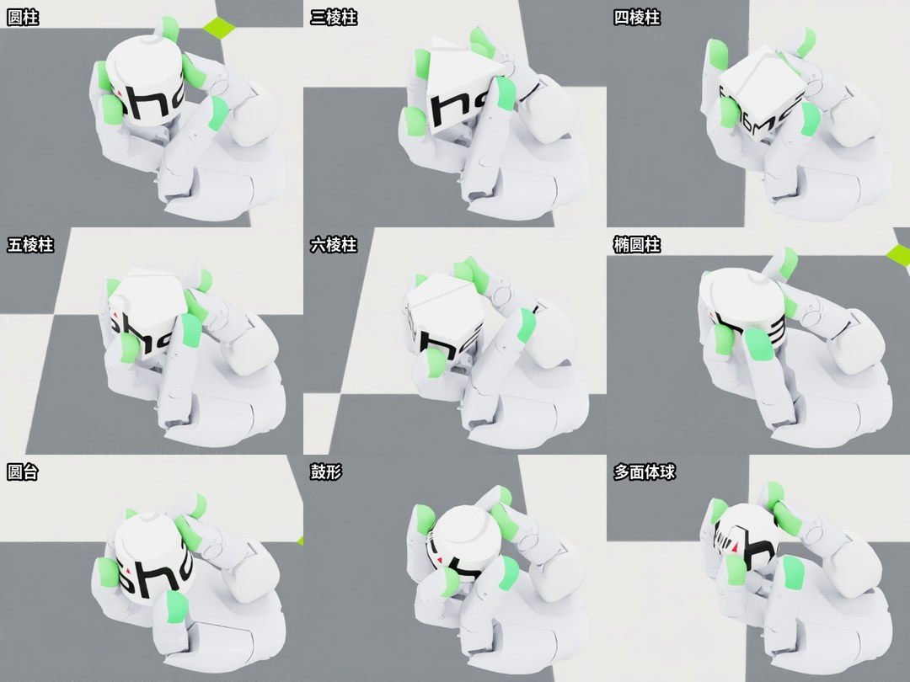

复现 LingBot-Touch · 第 3 节，共 7 节
第 3 节：论文表 3 的强化学习：Sharpa 手在手里转物体
这一节做什么：按论文表 3，在 Isaac Sim 里训练 Sharpa 手在手里转物体，比较五种触觉输入（无触觉、二值接触、原始信号、CNN、冻结的 LingBot-Touch），做了单圆柱和九种物体两个版本，每种输入 3 个种子。
结果：触觉有用；LingBot-Touch 自己的成功率接近论文，但没有超过 CNN：单圆柱 84.6 % 对 85.5 %，九种物体 49.8 % 对 59.0 %。
效果视频：Isaac Sim（PhysX）：强化学习训练出的策略转圆柱
论文表 3 的任务（Sharpa 手在手里转圆柱），满重力，实时播放 20 秒。每行是一种触觉输入训练出的策略（种子 0，全部在 Isaac Sim 的 PhysX 引擎里训练和回放），一行里的 4 格是同一个策略在 4 个随机初始条件下的表现，没有挑选。每格左上角是这一回合圆柱绕竖直轴净转过的圈数，转满 1 圈变绿（算成功）；圆柱掉落后环境重新开始，左下角累计掉落次数。这 4 个环境里，二值接触和 CNN 都稳定转了约 2 圈，无触觉有 1 个环境掉落，原始信号有 3 个环境中途掉落；4 个环境只是示意，成功率以本页下文 1024 个回合的评测为准。第五行是冻结 LingBot 编码器的最终策略：这 4 个环境都没有掉落，转了 1.8–2.7 圈，看起来和 CNN 差不多；1024 个回合的评测成功率是 80.3 %，低于 CNN 的 89.6 %。第六行把编码器换成我们自己重新预训练的那一个（同样冻结）：这 4 个环境里有 1 个掉落过一次，另外 3 个转了 1.4–2.4 圈；1024 个回合的评测成功率是 68.8 %（三个种子 68.8 / 84.8 / 83.9）。
同样的设置换一个随机种子重新训练（种子 1）。结果和种子 0 差别很大：无触觉从 50.9 % 变成 76.1 %；原始信号从 60.9 % 掉到 7.0 %，视频里能看到它学成了“握得住、但转得很慢”，20 秒里多数转不满一圈。这就是为什么每种配置要跑 3 个种子再比较，也是论文表 3 里各基线标准差很大的原因。
九物体任务：不用触觉（上）、CNN（中）和冻结的 LingBot-Touch 编码器（下）的策略，同样的 5 个物体、同样的初始抓取，满重力，实时播放 20 秒。左上角是这一回合已转过的圈数（转满 1 圈变绿），左下角是掉落次数，红框表示刚掉落。不用触觉的策略握不住物体：不断掉落、重新开始，几乎转不起来（1026 个回合的成功率 6.2 %）。用触觉的策略在圆柱、四棱柱、六棱柱、多面体球上能持续转动（成功率 67.3 %），上小下大的圆台是它最差的形状（25 %），画面里也转不动。LingBot-Touch 这一行在圆柱和六棱柱上能持续转动（各转了 2.6 和 2.3 圈），四棱柱、圆台和多面体球上转不起来。三行都是种子 0：LingBot-Touch 的种子 0（39.7 %）是它三个种子里最低的一个（平均 49.8 ± 9.3），CNN 的种子 0 是它三个种子里最高的一个（平均 59.0 ± 7.7），所以这段画面里两者的差距比平均水平大。物体、设置和完整结果见本页下文的多物体版本。
E3：Sharpa 手 in-hand rotation 强化学习（论文表 3）
环境。Sharpa 官方开源的 in-hand rotation 任务：右手托住一个圆柱（半径 2 cm、高 3.2 cm、约 50 g），五指配合让它绕竖直轴连续转动。物体质量、质心、摩擦和关节 PD 增益都随机化，并对物体随机施加外力；重力从 0.05 m/s² 开始，掉落率足够低时逐步加到约 10 m/s²。算法是仓库自带的 PPO。我们把环境从 Isaac Lab 2.3 移植到了 Isaac Lab 3.0，移植后随机抓取的统计（指尖到物体的距离、接触数、回合长度）和原版一致。
为了做论文表 3 的对比，对 Sharpa 原版环境改了四处：
- 五个指尖弹性体改成柔性接触（TacMap 需要穿透量，见上一节）。
- 策略不再看特权信息。原版策略能直接看到物体位置偏移、质量、质心、摩擦共 8 个量，不靠触觉也知道物体在哪；论文的“无触觉”基线只有本体感觉。
- 关掉仓库自带的指尖接触力观测（5 个标量），触觉只通过下面五种配置之一进入策略。
- 价值网络单独一个，并且能看到上面那 8 个特权量（非对称 actor-critic）。价值网络只在训练时给策略的动作打分，不参与输出动作；测试时五种配置的策略看到的仍然只有本体感觉加各自的触觉输入。为什么加这一条，见本节末尾“这个设置是怎么定下来的”。
| 配置（论文表 3 的五列） | 进入策略的触觉输入 | 可训练部分 |
|---|
| 无触觉 | 没有；只有关节角和关节目标（3 帧） | — |
| 二值接触 | 当前帧每个采样点是否压入物体，5 指 × 32 点 = 160 维 | — |
| 原始信号 | 8 帧 × 5 指 × 32 点 = 1280 维，直接拼进策略输入 | — |
| CNN（和策略一起训练） | 同样的 8 帧窗口 | 每根手指沿时间做一维卷积，再合成 64 维特征 |
| LingBot-Touch（冻结） | 8 帧窗口过冻结的 Tiny 编码器，取最新时间块的 160 个 token | 交叉注意力读出层（4 个 query），输出 64 维特征 |
五种配置用的是同一个仿真、同一份触觉信号，区别只在这份信号经过什么处理再交给策略。二值接触是其中信息最少的一种：每个采样点只保留“有没有压到物体”这一位信息（压到记 1，没压到记 0），压得多深、前几帧是什么样都丢掉；它相当于在指尖上装了 32 个只会报“碰到 / 没碰到”的开关。
同一帧触觉，五种给法。左上的两个点阵是同一时刻同一个指尖：左边是原始的深度值，右边是它变成二值接触后的样子。“+ 多少维”是策略的输入在本体感觉之外多出来的长度。前三种没有任何需要训练的触觉处理；CNN 的处理部分和策略一起训练；LingBot 的编码器是事先训练好的，这里不再改动。
CNN 这一种：和策略一起训练是什么意思
CNN 配置是论文里“针对这个任务专门学一个触觉特征”的基线，和 LingBot“拿通用的预训练特征来用”相对。它的触觉处理是一个小卷积网络，直接接在策略网络前面，两者连成一个网络，一起被强化学习训练：
上面一行是每一步的计算，下面是训练。每根手指的 8 帧信号沿时间方向过两层一维卷积（把 32 个采样点当作 32 个通道，每层看相邻 3 帧），五根手指的结果拼起来，再经两层全连接压成 64 维触觉特征，和本体感觉一起进策略网络。训练时没有“这一帧受力多大”之类的标签；PPO 根据奖励算出的梯度从策略网络一路传回卷积层，所以卷积层学到的是“对转圆柱有用”的特征。价值网络（图中未画）也读这 64 维特征，它的梯度同样会传回来。LingBot 配置的不同之处是：卷积这一段换成冻结的预训练编码器，梯度只到读出层为止（见下一张图）。
两层一维卷积具体在算什么
把一根手指的触觉看成一张表：32 行（32 个采样点，当作 32 个“通道”）× 8 列（8 帧）。卷积用一个宽 3 帧的窗口沿时间一格一格滑过去，所以位置数比帧数少 2；输出有多少个通道，取决于这一层设了多少组权重（这里两层都设 64 组），和输入的通道数没有换算关系。
帧数为什么从 8 变 6 再变 4，通道为什么是 64。窗口每次覆盖相邻 3 帧，两端不补零，所以 8 帧只放得下 6 个窗口，6 个位置只放得下 4 个窗口。每个窗口里的所有数（卷积 1 是 32 × 3 = 96 个，卷积 2 是 64 × 3 = 192 个）分别和 64 组权重做加权求和，各得到 1 个数，合起来就是 64 个通道。两层叠起来，最后 4 个位置各自汇总了原始信号的连续 5 帧（第 1–5、2–6、3–7、4–8 帧）。每层卷积后面接一个非线性函数（ELU）。
LingBot 这一种：冻结的编码器是怎么接进强化学习的
下图是“LingBot-Touch（冻结）”这一种配置的数据流，4096 个环境同时进行，每 0.05 秒走一遍上面一圈。编码器的参数全程不变；训练只更新读出层、策略网络和价值网络。其余四种配置只换掉图中“仿真触觉 → 编码器 → 读出层”这一段（不用触觉、只看有没有接触、把 8 帧数值直接拼进策略输入、或换成一个和策略一起训练的小卷积网络），其他完全相同。
一步里发生的事。仿真给出两路观测：本体感觉直接进策略；触觉是每个指尖 32 个采样点上物体压入弹性体的深度，保留最近 8 帧，先过冻结的编码器得到 token（8 帧按 2 帧一组分成 4 个时间块，取最新一块的 5 × 32 = 160 个），再由读出层压成 64 维特征。策略输出 22 个关节的目标增量，仿真前进一步。训练时价值网络额外看到 8 个特权量，用来给动作打分；PPO 用回合里得到的奖励更新读出层、策略和价值网络，共 1 亿步。
和论文设置的差别。论文的这个任务用 9 种形状、3 种尺寸的物体，这里只有 Sharpa 开源环境自带的一个圆柱；论文每根手指 96 个采样点，这里用 32 个（编码器预训练时支持的三种视触觉布局之一），原因是速度，见下表；论文没有给出环境数、训练步数、读出层结构，也没有说价值网络看什么，这些是我们自己定的。所以成功率的绝对值不能和论文那一行直接比，能比的是五种输入的先后顺序。
| 速度（一块 RTX PRO 6000，4096 个并行环境） | 实测 | 含义 |
|---|
| 无触觉、二值、原始信号、CNN 四种配置，显卡独占 | 3.0–3.3 万样本/秒 | 1 亿步约 1 小时 |
| 同上，两个训练共用一块显卡 | 各约 1.2 万样本/秒 | 合计反而更慢，所以各配置排队逐个训练 |
| 同上，和编码器的 probe 训练共用显卡 | 约 0.12 万样本/秒 | 慢 25 倍，不能混跑 |
| LingBot 配置，每指 32 点（每个窗口 640 个 token） | 约 0.29 万样本/秒 | 每个控制步要把 4096 个触觉窗口过一遍冻结编码器（约 3600 窗口/秒），1 亿步约 9.6 小时 |
| LingBot 配置，每指 32 点，换到一块 A800 上（11-18 起） | 约 0.25 万样本/秒 | 1 亿步约 11 小时 |
| LingBot 配置，每指 96 点（每个窗口 1920 个 token） | 编码器约 1100 窗口/秒 | 1 亿步约 25 小时，3 个种子要 3 天，所以改用 32 点 |
编码器的位置编码（RoPE）在官方实现里每层都重新计算；采样点布局固定时可以预先算好，输出逐位相同，速度快 1.3 倍，上表是优化后的数字。
评测。训练结束后每个策略跑 1024 个回合（每回合 20 s，训练时的随机化保留，动作取均值不加噪声），成功 = 掉落之前绕轴净转满一圈（论文表 8 的判据），分别在 9.8 m/s² 和训练起始的 0.05 m/s² 重力下测。
策略“摸到”的是什么
各配置实际运行的对比视频在本页顶部。下面这段是其中一个环境的近景，画面下方是同一时刻五个指尖的触觉信号。
触觉信号。每根手指 32 个采样点，按论文附录 C.3 的做法取物体压入指尖弹性体的深度，没有接触的点是灰色，压得越深越红；每指下方是该指尖受到的法向力。五种配置的差别只在于这组信号以什么形式进入策略：不用、只看有没有接触、8 帧原始数值、一个小卷积网络、或者冻结的 LingBot 编码器。
结果
15 次训练（5 种输入 × 3 个种子，每次 4096 个环境、1 亿步）已全部完成。下表是满重力下 1024 个回合的成功率，旁边是论文表 3 同一行的数字。
| 进入策略的触觉输入 | 我们：三个种子 | 我们：平均 ± 标准差 | 论文表 3：平均 ± 标准差 |
|---|
| 无触觉 | 50.9 / 76.1 / 11.6 % | 46.2 ± 32.5 | 11.5 ± 13.5 |
| 二值接触 | 78.1 / 84.5 / 70.1 % | 77.6 ± 7.2 | 18.3 ± 31.7 |
| 原始信号 | 60.9 / 7.0 / 87.0 % | 51.7 ± 40.8 | 33.4 ± 19.5 |
| CNN（和策略一起训练） | 89.6 / 82.6 / 84.4 % | 85.5 ± 3.6 | 26.6 ± 23.1 |
| LingBot-Touch（冻结） | 80.3 / 87.1 / 86.4 % | 84.6 ± 3.8 | 56.4 ± 7.5 |
| 我们重新预训练的编码器（冻结，“重新预训练”一节） | 68.8 / 84.8 / 83.9 % | 79.1 ± 9.0 | — |
标准差是三个种子的样本标准差。两边的任务设置不同（见下面第四点），绝对值不能直接比，能比的是五种输入之间的关系。
结论。
- 复现了的：用冻结的 LingBot 编码器，训练更稳，也明显好于不用触觉或直接用原始信号。它的三个种子都在 80–87 %，标准差 3.8 个百分点。无触觉和原始信号各有一个种子学成了“握得住但几乎不转”（11.6 %、7.0 %），标准差 30–40 个百分点，平均只有 46 % 和 52 %。二值接触居中（77.6 ± 7.2）。
- 没有复现的：它并不比和策略一起训练的 CNN 好。论文里 LingBot 比 CNN 高 30 个百分点（56.4 对 26.6），这里两者打平（84.6 ± 3.8 对 85.5 ± 3.6），0.9 个百分点的差距远小于种子之间的波动。CNN 在我们这里同样稳定，不像论文里那样种子间差别很大（±23.1）。
- 先后顺序和论文不完全一致。论文：LingBot > 原始信号 > CNN > 二值接触 > 无触觉；这里：CNN ≈ LingBot > 二值接触 > 原始信号 ≈ 无触觉。
- 局限。我们的任务只有一个圆柱、一个尺度，论文是九种形状、三种尺度。任务简单，各种输入的成功率都比论文高得多（无触觉 46 % 对 11.5 %），最好的两种已经在 85 % 上下，留给预训练表示拉开差距的空间有限。所以“LingBot 不比 CNN 好”目前只对这个简单设置成立；更接近论文的多物体版本（九种形状 × 三种尺度）正在验证。
补充（11-18 22:15）：换用我们自己重新预训练的编码器（“重新预训练”一节）做同样的训练，三个种子是 68.8 / 84.8 / 83.9 %：两个和官方权重持平，一个偏低，平均略低（79.1 对 84.6），差距在种子间波动的范围内。也就是说，按论文方法自己预训练出来的编码器，在这个任务上基本能替代官方权重。下面的图表是这些训练的结果。
| 配置 | 种子 | 末期重力 | 成功率 % | 净转圈数 | 持续 s | 低重力成功率 % | 论文成功率 % |
|---|
| 参照：Sharpa 原版设置 | 42 | 10.00 | 97.7 | 3.05 | 19.5 | 85.9 | — |
| 无触觉 | 0 / 1 / 2 | 10.00 / 10.00 / 10.00 | 50.9 / 76.1 / 11.6 | 0.96 / 1.62 / 0.46 | 13.3 / 16.3 / 17.3 | 47.8 / 38.6 / 16.3 | 11.5 ± 13.5 |
| 二值接触 | 0 / 1 / 2 | 10.00 / 10.00 / 10.00 | 78.1 / 84.5 / 70.1 | 1.81 / 1.97 / 1.26 | 16.6 / 17.5 / 16.1 | 68.8 / 64.5 / 67.9 | 18.3 ± 31.7 |
| 原始信号 | 0 / 1 / 2 | 10.00 / 10.00 / 10.00 | 60.9 / 7.0 / 87.0 | 1.13 / 0.40 / 2.04 | 15.6 / 17.6 / 17.8 | 73.6 / 0.5 / 83.7 | 33.4 ± 19.5 |
| CNN（一起训练） | 0 / 1 / 2 | 10.00 / 10.00 / 10.00 | 89.6 / 82.6 / 84.4 | 2.11 / 1.70 / 2.01 | 18.0 / 17.4 / 17.4 | 81.7 / 47.6 / 40.8 | 26.6 ± 23.1 |
| LingBot-Touch（冻结） | 0 / 1 / 2 | 10.00 / 10.00 / 10.00 | 80.3 / 87.1 / 86.4 | 1.79 / 2.49 / 1.72 | 17.7 / 17.6 / 18.7 | 68.6 / 59.8 / 83.5 | 56.4 ± 7.5 |
| 重新预训练的编码器（冻结） | 0 / 1 / 2 | 8.70 / 10.00 / 10.00 | 68.8 / 84.8 / 83.9 | 1.45 / 1.56 / 1.61 | 15.1 / 18.1 / 18.0 | 70.9 / 60.4 / 46.2 | — |
| 最初的设置：无触觉 | 0 | 0.05 | 23.0 | 0.57 | 6.9 | 38.6 | — |
加粗的五行是正式对比（策略只看本体感觉和各自的触觉输入，价值网络另看特权信息），每次训练 1 亿步。成功率、净转圈数、持续时间在 9.8 m/s² 下评测，持续时间是 20 s 回合里掉落之前的平均时间；低重力指 0.05 m/s²；末期重力是训练结束时课程加到的重力（m/s²）。多个种子的结果用“/”隔开，“…”表示还在训练或评测。论文一列是表 3 里 3 个种子的均值 ± 标准差。“参照”是 Sharpa 原版设置（训练 1.05 亿步）：策略带特权信息和接触力观测、刚性接触、16384 个环境。“最初的设置”是价值网络不看特权信息的那一版。“重新预训练的编码器”一行把冻结的 LingBot 换成“重新预训练”一节里自己训练的编码器，其余设置相同。
更接近论文的版本：九种形状 × 三种尺度
上面的对比只有一个圆柱，这是和论文设置差得最远的一处：论文对这个任务的描述是转动“九种形状、三种尺度”的物体（表 8），但没有列出是哪九种形状、尺寸多大，环境也没有公开。为了看结论在更难的任务上是否成立，我们自己定了一组：九种凸的形状，每种三个尺度（基准的 0.8、1.0、1.2 倍），共 27 个物体。基准大小取 Sharpa 仓库自带圆柱的大小（直径 40 mm、高 32 mm）。

九种形状（图中是 1.0 倍尺度）。每个物体的网格都是不超过 64 个顶点的凸多面体，这样物理引擎用的碰撞外形和触觉计算用的网格是同一个。4104 个并行环境里每个物体占 152 个；每个物体用仓库自带的脚本各生成了 600 组稳定的初始抓取。价值网络额外能看到物体是哪种形状、多大（只在训练时用），策略本身看不到。其余设置和单圆柱时完全相同。
九物体任务：不用触觉（上）、CNN（中）和冻结的 LingBot-Touch 编码器（下）的策略，同样的 5 个物体、同样的初始抓取，满重力，实时播放 20 秒。左上角是这一回合已转过的圈数（转满 1 圈变绿），左下角是掉落次数，红框表示刚掉落。不用触觉的策略握不住物体：不断掉落、重新开始，几乎转不起来（1026 个回合的成功率 6.2 %）。用触觉的策略在圆柱、四棱柱、六棱柱、多面体球上能持续转动（成功率 67.3 %），上小下大的圆台是它最差的形状（25 %），画面里也转不动。LingBot-Touch 这一行在圆柱和六棱柱上能持续转动（各转了 2.6 和 2.3 圈），四棱柱、圆台和多面体球上转不起来。三行都是种子 0：LingBot-Touch 的种子 0（39.7 %）是它三个种子里最低的一个（平均 49.8 ± 9.3），CNN 的种子 0 是它三个种子里最高的一个（平均 59.0 ± 7.7），所以这段画面里两者的差距比平均水平大。
| 进入策略的触觉输入 | 九物体：成功率（各个种子） | 尺度 0.8 / 1.0 / 1.2 | 平均圈数 | 对照：单圆柱（平均 ± 标准差） |
|---|
| 无触觉 | 6.2 / 0.0 / 6.5 % | 3 / 4 / 5 % | 0.27 / 0.02 / 0.25 | 46.2 ± 32.5 |
| 二值接触 | 47.3 / 26.7 / 32.5 % | 28 / 38 / 40 % | 1.04 / 0.61 / 0.75 | 77.6 ± 7.2 |
| 原始信号 | 52.5 / 38.9 / 38.7 % | 32 / 46 / 52 % | 1.15 / 0.80 / 0.88 | 51.7 ± 40.8 |
| CNN（和策略一起训练） | 67.3 / 52.3 / 57.2 % | 47 / 64 / 66 % | 1.58 / 1.13 / 1.36 | 85.5 ± 3.6 |
| LingBot-Touch（冻结） | 39.7 / 57.9 / 51.8 % | 38 / 54 / 57 % | 0.87 / 1.19 / 1.09 | 84.6 ± 3.8 |
| 分形状的成功率 % | 无触觉 | 二值接触 | 原始信号 | CNN | LingBot-Touch |
|---|
| 圆柱 | 12.0 | 65.2 | 70.5 | 83.9 | 81.9 |
| 三棱柱 | 0.0 | 11.7 | 38.6 | 33.6 | 20.5 |
| 四棱柱 | 2.9 | 22.5 | 42.7 | 55.3 | 49.1 |
| 五棱柱 | 4.1 | 28.4 | 27.8 | 56.1 | 34.8 |
| 六棱柱 | 4.4 | 48.2 | 56.4 | 70.8 | 64.6 |
| 椭圆柱 | 0.3 | 30.4 | 45.0 | 61.1 | 52.3 |
| 圆台 | 3.5 | 9.6 | 12.9 | 25.4 | 17.5 |
| 鼓形 | 4.7 | 51.2 | 52.3 | 73.4 | 65.8 |
| 多面体球 | 6.4 | 52.0 | 44.2 | 71.1 | 61.4 |
每个策略评测 1026 个回合（27 个物体变体各 38 个），满重力，判据和单圆柱时相同（掉落之前绕轴净转满一圈）。分形状的数字每种形状只有 114 个回合，误差约 ±4 个百分点。
结论（五种输入各三个种子都已完成）。
- 任务确实难了很多。同样的 CNN 配置，单圆柱时三个种子的成功率是 89.6 / 82.6 / 84.4 %，九物体时三个种子是 67.3 / 52.3 / 57.2 %（平均 59.0 ± 7.7）；重力课程在单圆柱时 1200 万步就走完，这里到 1 亿步快结束时才走完，说明还可以再训练得更久。
- 物体一多，不用触觉就学不起来了。无触觉的策略满重力下的成功率：6.2 / 0.0 / 6.5 %（平均 4.3 ± 3.7）。下面说的是种子 0：它在整个训练过程中掉落率一直降不下来，重力课程根本没有启动（一直停在 0.05 m/s²）；即使在这个几乎没有重力的条件下评测，成功率也只有 21.4 %。单圆柱时无触觉的三个种子是 50.9 / 76.1 / 11.6 %。这和论文的数字（无触觉 11.5 %）是同一个量级，说明多物体的设置才接近论文的难度。
- 几种输入拉开了差距。已完成的种子：无触觉 6.2 / 0.0 / 6.5 %（平均 4.3 ± 3.7）；二值接触 47.3 / 26.7 / 32.5 %（平均 35.5 ± 10.6）；原始信号 52.5 / 38.9 / 38.7 %（平均 43.4 ± 7.9）；CNN 67.3 / 52.3 / 57.2 %（平均 59.0 ± 7.7）。无触觉 < 二值接触 < CNN 的顺序和论文一致；原始信号在论文里高于 CNN（33.4 对 26.6），我们这里目前低于 CNN。单圆柱时无触觉、二值接触、CNN 的平均是 46 %、78 %、86 %，差距没有这么大。二值接触和原始信号换个种子能差十几到二十个百分点，所以每种输入都要看三个种子。
- 分形状看差别很大：圆柱最容易（CNN 86.8 %），上小下大的圆台最难（25.4 %），棱柱里棱越少越难；小尺度（0.8 倍）比另外两个尺度低约 18 个百分点。
- 冻结的 LingBot-Touch 编码器没有比 CNN 好。它的三个种子是 39.7 / 57.9 / 51.8 %（平均 49.8 ± 9.3），明显好于无触觉，高于二值接触和原始信号，但低于和策略一起训练的 CNN（67.3 / 52.3 / 57.2 %（平均 59.0 ± 7.7））。两者差 9 个百分点，在三个种子的波动范围内，不能说 CNN 显著更好；但“LingBot 好于 CNN”没有出现。
- 和论文表 3 对照：LingBot 自己的数字接近，差别在基线。论文里 LingBot 是 56.4 ± 7.5，我们是 49.8 ± 9.3，相差不大。但论文里 CNN 只有 26.6 ± 23.1、原始信号 33.4 ± 19.5、二值接触 18.3 ± 31.7，我们的 CNN 是 59.0 ± 7.7、原始信号 43.4 ± 7.9、二值接触 35.5 ± 10.6。也就是说，论文里的差距来自它的基线分数低；在我们的重建里，同样的训练设置下基线高得多，差距就没有了。论文的基线为什么低，我们无从判断：它的环境没有开源，我们的环境是自己重建的，每个指尖 32 个采样点（论文 96 个），每种输入三个种子。所以这个对照只能说明“在我们的重建里没有复现”。
这个设置是怎么定下来的
第一步：确认移植后的环境本身能学起来。完全按 Sharpa 仓库自己的设置（16384 个环境、策略带特权信息和接触力观测、刚性接触）训练，约 2200 万步重力课程就走完了；训练到 1.05 亿步后评测，满重力下成功率 97.7 %，平均净转 3.05 圈（上表第一行）。所以环境移植和评测流程没有问题。
第二步：最初的设置（上面四处改动里只做前三处）学不起来。无触觉配置跑完 1 亿步，策略很快学会让圆柱转起来（约 0.6 rad/s），但每一步有约 0.5–1 % 的概率把圆柱顶出允许的高度范围，回合平均只持续 5–6 秒，重力课程自始至终没有启动（要求每步掉落率低于 0.05 %）。评测成功率 23.0 %（上表最后一行）。
第三步：用 2500 万步的短训练把因素分开。参照和无触觉配置之间差了四样东西：特权信息、接触力观测、接触刚度、环境数。下表每行改一样，全部是柔性接触、4096 个环境。
| # | 策略看到的 | 价值网络看到的 | 2500 万步时的重力 m/s² | 转速 rad/s | 回合平均持续 s（满 20） |
|---|
| 1 | 本体感觉 + 特权信息 + 接触力（Sharpa 原版配方） | 和策略相同 | 10.00 | 0.58 | 15.9 |
| 2 | 本体感觉 + 接触力（5 个标量） | 和策略相同 | 0.10 | 0.59 | 9.0 |
| 3 | 本体感觉（无触觉，即最初的设置） | 和策略相同 | 0.05 | 0.64 | 5.3 |
| 4 | 本体感觉 + 原始触觉 | 和策略相同 | 2.13 | 0.12 | 11.2 |
| 5 | 本体感觉 + 原始触觉 | 另加特权信息 | 4.46 | 0.60 | 12.2 |
| 6 | 本体感觉（无触觉） | 另加特权信息 | 0.06 | 0.68 | 9.9 |
| 7 | 本体感觉 + 二值接触 | 另加特权信息 | 8.56 | 0.69 | 11.9 |
数值是 2400–2600 万步之间的平均。重力课程从 0.05 m/s² 起步，上限约 10 m/s²。最后两行取自正式对比里的训练，供对照。
从表里能读出三件事。其一，柔性接触和较少的环境数都不是障碍（第 1 行照样走完课程）。其二，策略和价值网络都看不到物体状态时学得不好：带原始触觉的那次（第 4 行）课程虽然启动了，但学成的是“握紧、几乎不转”（转速 0.12 rad/s）。其三，只给价值网络加特权信息（第 5 行），同样的原始触觉输入就能边转边加重力（转速 0.60 rad/s，重力 4.5 m/s²）。价值网络只在训练时使用，这样改不会让任何一种配置在测试时多看到东西，所以五种输入的对比统一采用这个设置。需要注意的是，这个设置下连无触觉配置也能在 1 亿步内走完重力课程（见上面的结果表），也就是说特权价值网络本身帮了很大的忙，触觉输入的贡献要看五种配置之间的差距。
← 上一节：probe · 下一节：重新预训练 →